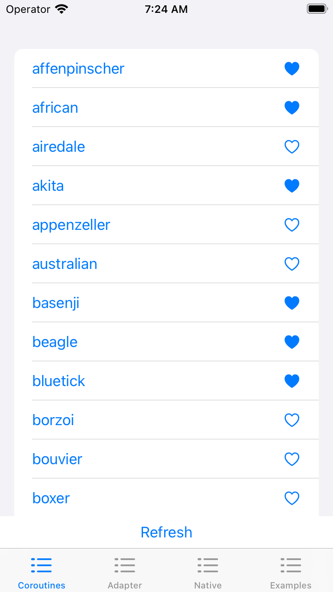
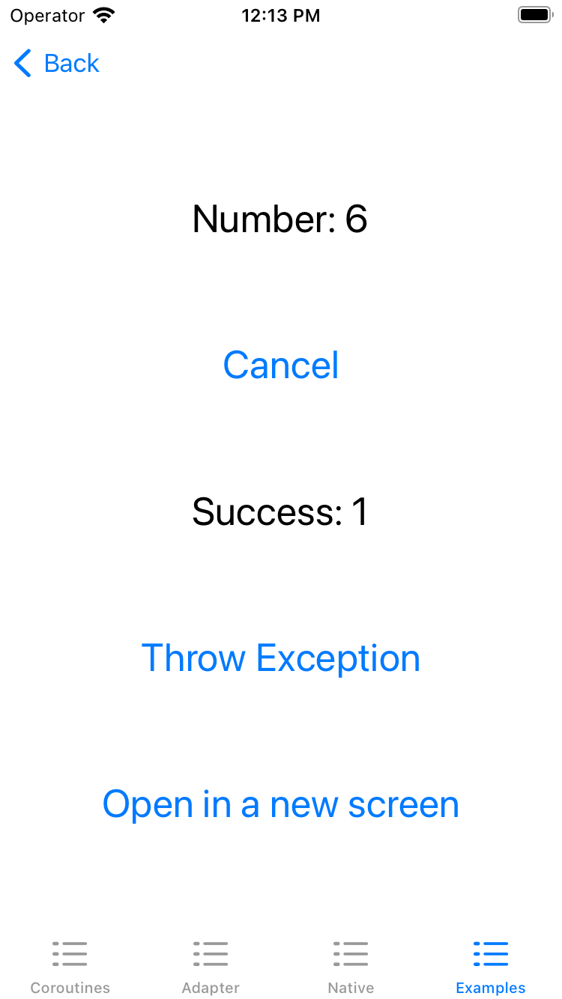
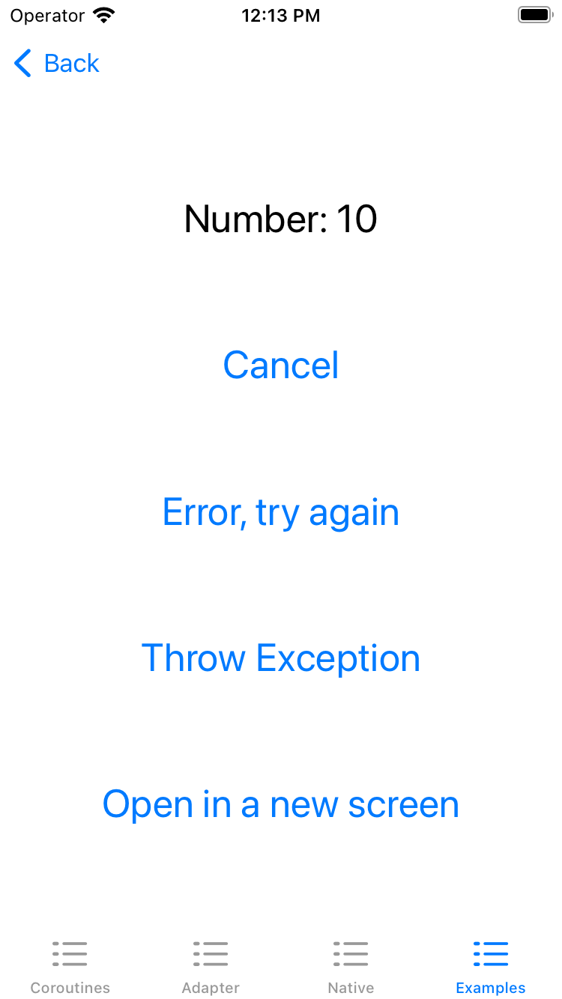
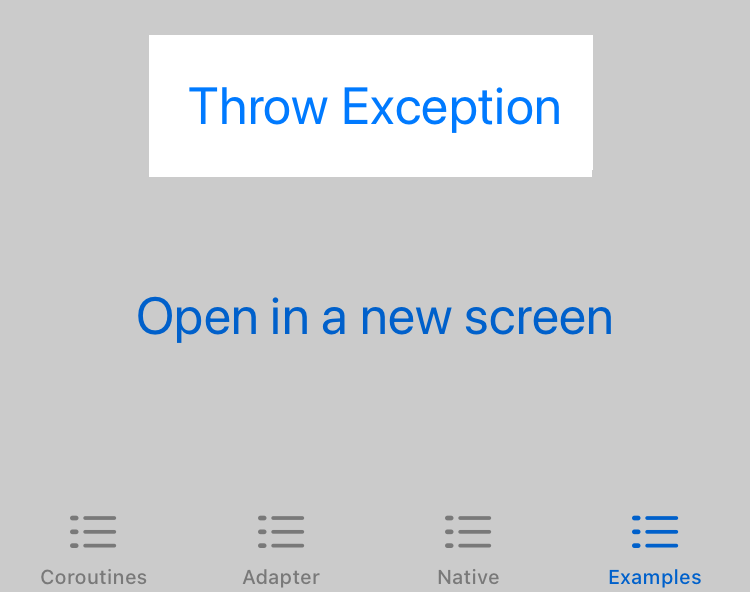
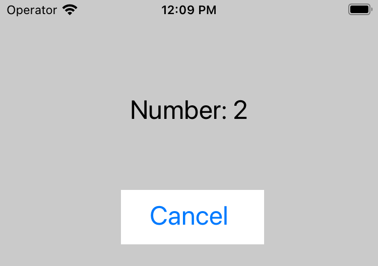
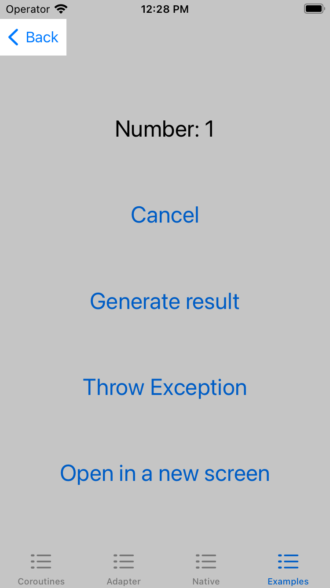
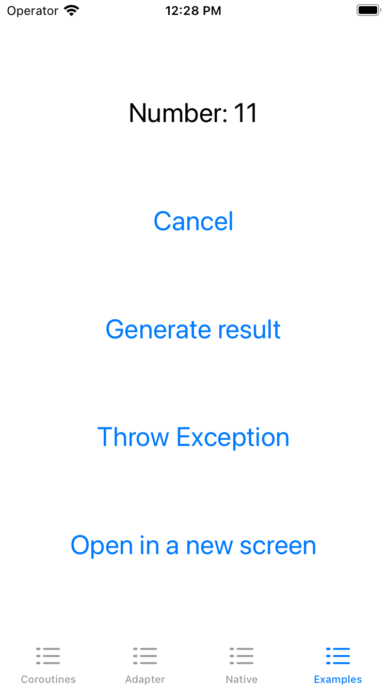

This is a write-up for a talk I gave at Droidcon Berlin 2023, the video version can be found here:
The presentations / decks can be found here:
Async / Await
Combine
TL;DR KMP-NativeCoroutines allows the use Native Swift solutions (Async await, Combine or RxSwift) for asynchronous Kotlin code (Suspend functions and Flows). The library is also one of the Kotlin Grant winners.
The code used in the deck and in this write-up is available on GitHub, it uses the Touchlab KaMP Kit Starter. The main implementation is for Async Await, but there is also a commented out Combine implementation:
 AKJAW
AKJAW



View Model
The starter screen which uses the three coroutine approaches calls the following ViewModel:
class BreedViewModel() : ViewModel() {
val breedState: StateFlow<BreedViewState> // Data stream
suspend fun refreshBreeds(): Boolean // Suspend function
fun updateBreedFavorite(breed: Breed): Job // Ordinary function
}
Which also has a super class that has access to a CoroutineScope and a function for cancelling all child coroutines:
actual abstract class ViewModel {
actual val viewModelScope = MainScope()
fun clear() {
viewModelScope.coroutineContext.cancelChildren()
}
}Normal / Ordinary function
The easiest way to call a suspend function is to call a normal function, which launches a coroutine:
fun updateBreedFavorite(breed: Breed): Job {
return viewModelScope.launch {
breedRepository.updateBreedFavorite(breed)
}
}
And in Swift, it's just a normal function call:
func onBreedFavorite(breed: Breed) {
viewModel?.updateBreedFavorite(breed: breed)
}
However, this approach comes with drawbacks:
- There is no way to get a return value from it, the only way to achievie it to modify some internal state which is exposed to the UI
- A CoroutineScope is required in order to launch the coroutine from Kotlin
- It's not so easy to be notified when the coroutine completes
Suspend functions
For cases where the return value is needed or there needs to be a callback for when the suspension completes, then a suspending function needs to be called directly from Swift.
suspend fun refreshBreeds(): Boolean {
return try {
breedRepository.refreshBreeds()
true
} catch (exception: Exception) {
handleBreedError(exception)
false
}
}
If you're just interested in the best approach, skin on over to the KMP-NativeCoroutines section.
Official generated code
This is the simplest form of calling suspend functions from Swift, which comes out of the box with Kotlin. However, it is also the worst one... Calling it is pretty straight forward, every suspend function will take in a lambda from Swift:
viewModel?.refreshBreeds { wasRefreshed, error in
print("refresh: \(wasRefreshed), \(error)")
}
However, the return value is Optional, which means that it can exist or not (like Nullable):
refresh: Optional(1), error: nilEven though there is an error parameter, it only represents CancellationExceptions all Other uncaught Kotlin exceptions are fatal causing the App to crash:
/**
* @note This method converts instances of CancellationException to errors.
* Other uncaught Kotlin exceptions are fatal.
*/
- (void)refreshBreedsWithCompletionHandler:(void (^)(SharedBoolean * _Nullable, NSError * _Nullable))completionHandler __attribute__((swift_name("refreshBreeds(completionHandler:)")));
- It forces an Optional value
- There is no way to cancel it
- Additional error handling is required
Adapter / Wrapper
This approach gives more control over our suspend functions from Swift, but requires some additional boilerplate for every function. The SuspendAdapter is the class which is used from Swift to call any suspending function:
class SuspendAdapter<T : Any>(
private val scope: CoroutineScope,
private val suspender: suspend () -> T
)
In order to use the Adapter, the iOS target requires an additional ViewModel class, which delegates all calls to the common ViewModel:
@Suppress("Unused") // It's used from Swift
class AdapterBreedViewModel {
val viewModel = BreedViewModel()
fun refreshBreeds() =
SuspendAdapter(viewModel.scope) {
viewModel.refreshBreeds()
}
}
The SuspendAdapter has a subscribe function is used to launch the coroutine from Swift:
class SuspendAdapter<T : Any>(
private val scope: CoroutineScope,
private val suspender: suspend () -> T
) {
fun subscribe(
onSuccess: (item: T) -> Unit,
onThrow: (error: Throwable) -> Unit
) = scope.launch {
try {
onSuccess(suspender())
} catch (error: Throwable) {
onThrow(error)
}
}
}
From the iOS App perspective, the contract is definitely much easier to use and understand:
viewModel.refreshBreeds().subscribe(
onSuccess: { value in
print("completion \(value)")
},
onThrow: { error in
print("error \(error)")
}
)
There is also a way to integrate it with Native solutions (like Combine):
createFuture(suspendAdapter: adapter)
.sink { completion in
print("completion \(completion)")
} receiveValue: { value in
print("recieveValue \(value)")
}.store(in: &cancellables)
+ Better error handling
+ No Optional value
+ Ability to integrate with Combine or other
- A lot of Additional boilerplate
KMP-NativeCoroutines
This is my recommended approach of handling suspend functions from Swift. The library basically generates code similar to the Adapter (but a lot better) from the previous section. Additionally, it also has Swift libraries / packages which allow the use of Native Swift solutions, which in this case it will be Async/Await.
To generate the Adapter, all that needs to be done from Kotlin is to add the correct annotation:
@NativeCoroutines
suspend fun nativeRefreshBreeds(): Boolean =
refreshBreeds()
And from Swift, once the correct library is imported, there is access to helper functions which for this call is asyncFunction that takes in the Kotlin suspend function call:
func refresh() async {
let suspend = viewModel.nativeRefreshBreeds()
do {
let value =
try await asyncFunction(for: suspend)
print("Async Success: \(value)")
} catch {
print("Async Failed with error: \(error)")
}
}
There exists also another helper function asyncResult which eliminates the need for error handling because it returns enum values representing either success or error values:
func refresh() async {
let suspend = viewModel.nativeRefreshBreeds()
let value = await asyncResult(for: suspend)
switch value {
case .success(let result):
print("Async Success: \(result)")
case .failure(let error):
print("Async Failed with error: \(error)")
}
}
+ No Boilerplate
+ No Optional
+ Dedicated Swift packages for Combine, Async, RxSwift
+ Automatic cancellation support
Internals of the generated code
If you're interested in what the library generates, here's my own, non-complete and simplified version.
The generated Kotlin function, which is called from Swift, looks as follows:
@ObjCName(name = "nativeRefreshBreeds")
public fun BreedViewModel.nativeRefreshBreedsNative(): NativeSuspend<Boolean> =
nativeSuspend(viewModelScope) { nativeRefreshBreeds() }The body of the function does a similar thing to what happened in the handwritten Adapter, it just delegates the call to the common ViewModel.
The return value NativeSuspend is type alias for a lambda that takes in three other lambdas:
typealias NativeCallback<T> = (T, Unit) -> Unit
typealias NativeSuspend<T> = (
onResult: NativeCallback<T>,
onError: NativeCallback<NativeError>,
onCancelled: NativeCallback<NativeError>
) -> NativeCancellableAnd in the generated code ObjC it looks like this:
@interface SharedBreedViewModel (Extensions)
- (SharedKotlinUnit *(^(^)(SharedKotlinUnit *(^)(SharedBoolean *, SharedKotlinUnit *), SharedKotlinUnit *(^)(NSError *, SharedKotlinUnit *), SharedKotlinUnit *(^)(NSError *, SharedKotlinUnit *)))(void))nativeRefreshBreeds __attribute__((swift_name("nativeRefreshBreeds()")));
@endI personally cannot decipher the code above, but fortunately the library author can and provides this on the Swift side:
public typealias NativeCallback<T, Unit> = (T, Unit) -> Unit
public typealias NativeSuspend<Result, Failure: Error, Unit> = (
_ onResult: @escaping NativeCallback<Result, Unit>,
_ onError: @escaping NativeCallback<Failure, Unit>,
_ onCancelled: @escaping NativeCallback<Failure, Unit>
) -> NativeCancellable<Unit>Which is then used for the asyncFunction:
public func asyncFunction<Result, Failure: Error, Unit>(
for nativeSuspend: @escaping NativeSuspend<Result, Failure, Unit>
) async throws -> Result {
try await AsyncFunctionTask(nativeSuspend: nativeSuspend).awaitResult()
}A lot of more internal magic is done, which allows the following Async/Await call:
let result =
await asyncResult(for: viewModel.nativeRefreshBreeds())Flows
It is possible to collect flows using the Official way and with the Adapter as well, however I won't dive into their implementations. They are briefly shown in the deck on page 63 and 65 respectively.
KMP-NativeCoroutines
The approach is the same as with suspending functions, just adding an annotation will generate the necessary code on the Kotlin/Native side:
@NativeCoroutinesState
val nativeBreedState: StateFlow<BreedViewState> =
breedStateThis time, the asyncSequence is used for transforming the Flow into a Sequence:
func activate() async {
let nativeFlow = viewModel.nativeBreedStateFlow
do {
let sequence = asyncSequence(for: nativeFlow)
for try await dogsState in sequence {
self.loading = dogsState.isLoading
self.breeds = dogsState.breeds
self.error = dogsState.error
}
} catch {
print("Async Failed with error: \(error)")
}
}
Publishing changes from background threads is not allowed; make sure to publish values from the main thread (via operators like receive(on:)) on model updates.Which is caused by the internal state updates:
self.loading = dogsState.isLoading
self.breeds = dogsState.breeds
self.error = dogsState.errorThe fix for the warning is to update the state on the main thread, which shown in the next section.
+ No casting needed
+ Automatic cancellation
+ Collection on Default dispatcher
Controlling the Scope
To define the scope / dispatcher which KMP-NativeCoroutines uses needs to be available in the Kotlin class and have the following annotation:
@NativeCoroutineScope
actual val viewModelScope = MainScope()
MainScope is a standard library function which creates a Scope for the "UI Thread":
public fun MainScope(): CoroutineScope =
ContextScope(SupervisorJob() + Dispatchers.Main)Keep in mind that the @NativeCoroutineScope only controls the Kotlin side of the coroutine.
- In Combine, the above scope makes the Swift "collection" happen on the main thread. Thanks to this, the .receive(on: DispatchQueue.main) is not required.
- In Async / Await, this scope won't apply to the Swift side. The thread still needs to be specified in Swift, like in the example below.
@MainActor
func activate() async { ... }
Without this @MainActor annotation, the values are "collected" in Kotlin using the Main thread, but once they are received by Swift, the Task is responsible for specifying the threading.
Exception / Error Handling
It's good to know how Kotlin Coroutines exceptions affect the iOS app and how to guard against them.

Suspend functions
The function which will be called is as follows, it delays for 1 second and the throws an exception:
@NativeCoroutines
suspend fun throwException() {
delay(1000)
throw IllegalStateException()
}
On The Swift side, it is called like this:
print("async exception start")
do {
let result = try await asyncFunction(for: suspend)
print("async exception success \(result)")
} catch {
print("async exception failure \(error)")
}
And the result is as follows:
18:07:03 async exception start
18:07:04 async exception failure (ErrorDomain=KotlinExcepton Code=0 "(null)" UserInfo={KotlinException=kotlin.IllegalStateException})
Flows
For flows, the stream emits 3 values and then throws an exception:
@NativeCoroutines
val errorFlow: Flow<Int> = flow {
repeat(3) { number ->
emit(number)
delay(1000)
}
throw IllegalStateException()
}
do {
let sequence = asyncSequence(for: viewModel.errorFlow)
for try await number in sequence {
print("sequence exception n: \(number)")
}
} catch {
print("sequence exception error: \(error)")
}
2023-06-28 18:14:24 sequence exception number 0
2023-06-28 18:14:25 sequence exception number 1
2023-06-28 18:14:26 sequence exception number 2
2023-06-28 18:14:27 sequence exception error
(Error Domain=KotlinException Code=0 "(null)"
UserInfo={KotlinException=kotlin.IllegalStateException})
There is also an option to just ignore errors:
func throwException() async throws {
let sequence = asyncSequence(for: viewModel.errorFlow)
for try await number in sequence {
print("sequence exception n: \(number)")
}
}
try? await observableModel.throwException()Exception handling summary
In Async / Await the error handling is pretty straight forward with the do catch statement so no surprises here. However, handling these Kotlin exceptions on the Swift side is pretty awkward.
I'm personally not a fan of throwing exceptions (and neither is the Kotlin team), it's much better to define a value which represents the error state. Which could a null or a sealed class, both of these approaches will be a lot easier and safer to handle on the Swift side.
Cancellation
The following Flow will be used to demonstrate cancellation on the iOS App:
@NativeCoroutines
val numberFlow: Flow<Int> = flow {
var i = 0
while (true) {
emit(i++)
delay(1000)
}
}.onEach { number ->
log.i("numberFlow onEach: $number")
}.onCompletion { throwable ->
log.i("numberFlow onCompletion: $throwable")
}
There are two ways of cancelling coroutines in the iOS App:
- Manual, which happens when a button is pressed or when the onDisappear callback is called.
- Automatic when SwiftUI deems the screen as not needed (No callbacks required).
I tried making the code in such a way that both these ways are possible using Async / Await. However, at the moment Swift lacks structured concurrency for Tasks meaning, that only one is possible at the same time.
Manual

In order to manually cancel the number sequence, a new Task needs to be created and assigned to a field:
func listenToNumbers() async {
numberTask = Task {
let sequence =
asyncSequence(for: viewModel.numberFlow)
for try await number in sequence {
self.number = number.intValue
}
}
}
When the button is pressed, or onDisappear happens, then the cancellation happens:
func cancel() {
numberTask?.cancel()
numberTask = nil
}
Resulting in these logs:
2023-06-30 12:21:30 numberFlow onEach: 0
2023-06-30 12:21:31 numberFlow onEach: 1
2023-06-30 12:21:32 numberFlow onEach: 2
2023-06-30 12:21:33 numberFlow onCompletion: kotlinx.coroutines.JobCancellationException: …
Automatic
In order for SwiftUI to automatically cancel, the screen needs to be fully closed. In the Playground screen, it is achieved by opening a new "nested" screen and then closing it:


In order to achieve this automatic cancellation, the numberTask cannot be created, because nested Tasks are not cancelled by the parent (no structured concurrency). When the async function is executed directly:
func listenToNumbers() async {
let sequence =
asyncSequence(for: viewModel.numberFlow)
for try await number in sequence {
self.number = number.intValue
}
}
Then SwiftUI is in control of the Task, thus allowing automatic cancellation:
var body: some View {
...
}.task {
await observableModel.listenToNumbers()
}
No additional callbacks are required (like onDisappear), because SwiftUI takes care of everything. When the class calling the coroutine is de-initialized, then the coroutine is cancelled:
2023-03-24 12:28:13 init 0x00006000024be000
2023-03-24 12:28:13 numberFlow onEach: 0
2023-03-24 12:28:14 numberFlow onEach: 1
2023-03-24 12:28:15 numberFlow onEach: 2
2023-03-24 12:28:16 numberFlow onEach: 3
2023-03-24 12:28:16 deinit 0x00006000024be000
2023-03-24 12:28:16 numberFlow onCompletion: kotlinx.coroutines.JobCancellationException: ...
Cancellation summary
I won't go into depth into this topic, because there are better resources for it. Basically correct cancellation results in:
- Freeing up the users resources like data transfer
- Avoiding Memory leaks
- Fewer unnecessary API calls